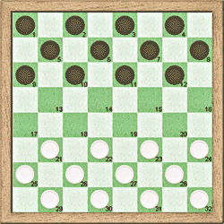
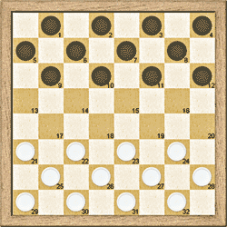
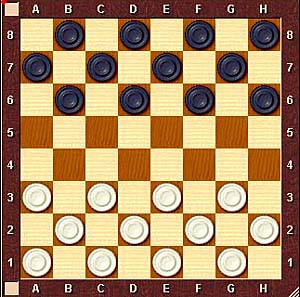
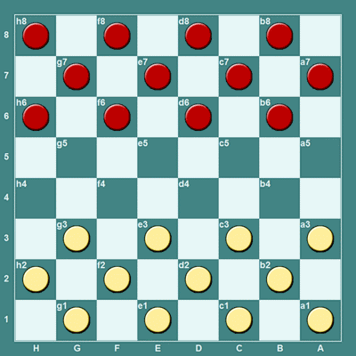

GameType tag¶
The GameType tag defines the type of the draughts game, including the size of the board and the preferred notation. It has been previously defined on [Grimminck].
The GameType tag has the following syntax:
GameType "Type-number [,Start colour (W/B),Board width, Board height, Notation [,Invert-flag]]"
A regular expression for the GameType tag is
"[0-9]+(,[WB],[0-9]+,[0-9]+,[ANS][0123](,[01])?)?"
The game type is a number followed by some optional attributes. Several numbers are
predefined, as given by the following table. A test page for the GameType tag can be
found at gametype.html.
Type |
Game |
Full details |
Result type |
Capture Separator |
|---|---|---|---|---|
0 |
Chess |
|||
1 |
Chinese chess |
|||
2-19 |
Future chess expansion |
|||
20 |
10x10 International draughts |
[GameType “20,W,10,10,N2,0”] |
International |
x |
21 |
English draughts |
[GameType “21,B,8,8,N1,0”] |
Default |
x |
22 |
Italian draughts |
[GameType “22,W,8,8,N2,1”] |
Default |
x |
23 |
American pool checkers |
[GameType “23,B,8,8,N1,0”] |
Default |
x |
Pool checkers (unified) *) |
[GameType “23,W,8,8,A0,0”] |
Default |
x |
|
Zimbabwean pool checkers *) |
[GameType “23,W,8,8,A0,0”] |
Default |
x |
|
Jamaican draughts *) |
[GameType “23,W,8,8,A1,1”] |
Default |
x |
|
24 |
Spanish draughts |
[GameType “24,W,8,8,N1,1”] |
Default |
x |
25 |
Russian draughts |
[GameType “25,W,8,8,A0,0”] |
Default |
: |
26 |
Brazilian draughts |
[GameType “26,W,8,8,A0,0”] |
Default |
x |
27 |
Canadian draughts |
[GameType “27,W,12,12,N2,0”] |
International |
x |
28 |
Portuguese draughts |
[GameType “28,W,8,8,N1,1”] |
Default |
x |
29 |
Czech draughts |
[GameType “29,W,8,8,A0,0”] |
Default |
x |
30 |
Turkish draughts |
[GameType “30,W,8,8,A0,0”] |
Default |
x |
31 |
Thai draughts |
[GameType “31,B,8,8,N2,0”] |
Default |
- |
40 |
Frisian draughts |
[GameType “40,W,10,10,N2,0”] |
Default |
x |
41 |
Spantsiretti draughts |
[GameType “41,W,10,8,A0,0”] |
Default |
: |
42-49 |
Future draughts expansion |
|||
50 |
Othello |
|||
51.. |
Future expansion |
*) Note that Pool checkers and Jamaican draughts have
been added later. They have the same rules as American pool checkers, but they use algebraic
notation, and white moves first. Moreover, in Jamaican draughts the direction of the
numbering is vertical instead of horizontal. Zimbabwean is played on the light squares.
All checkers variants share the number 23, but the abbreviated version [GameType "23"]
still expands to [GameType "23,B,8,8,N1,0"] (American pool checkers).
The game types 29, 30, 31, 40 and 41 are not listed in [Wikipedia], but they were added based on conventions of the game site Play OK and the program Aurora Borealis.
Attribute |
Description |
|---|---|
Start-colour |
Either W or B - white/black side starts |
Board-width |
Width of board. |
Board-height |
Height of board. |
Notation |
A character indicating the notation type
followed by a number indicating the location of the first square (A1 or 1) from the perspective of the starting player
|
Invert-flag |
|
Important
The interpretation of the Invert-flag has been changed! The previous interpretation (0 = Play on dark squares, 1 = Play on light squares) was not accurate for certain game types.
Note
The Start-colour field is just an indication for the colour of the pieces, but it has no influence on the notation.
Note
The principal direction of the notation is assumed to be horizontal. This means that square 2 is always to the left or to the right of square 1.
Note
Usually the game is played on the dark squares.
Examples¶
[GameType "0"] {Straight chess}
[GameType "0,W,8,8,S0"] {Straight chess with full spec}
[GameType "20"] {10x10 draughts}
[GameType "21,B,8,8,N1,0"] {English draughts with full spec}
Italian draughts uses the following notation:

For Italian draughts the first square (1) is located in the top left corner of the board. The next square (2) can be found by moving in horizontal direction to the right. Therefore Italian draughts gets the notation number 2, that corresponds with (Top left, horizontal).
American pool checkers uses the following notation:

Pool checkers uses the following notation:

Jamaican draughts uses the following notation:
